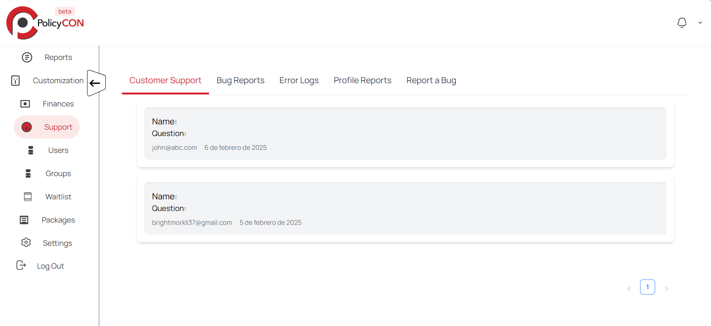
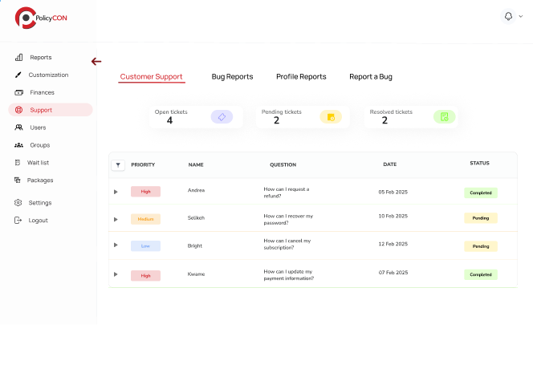
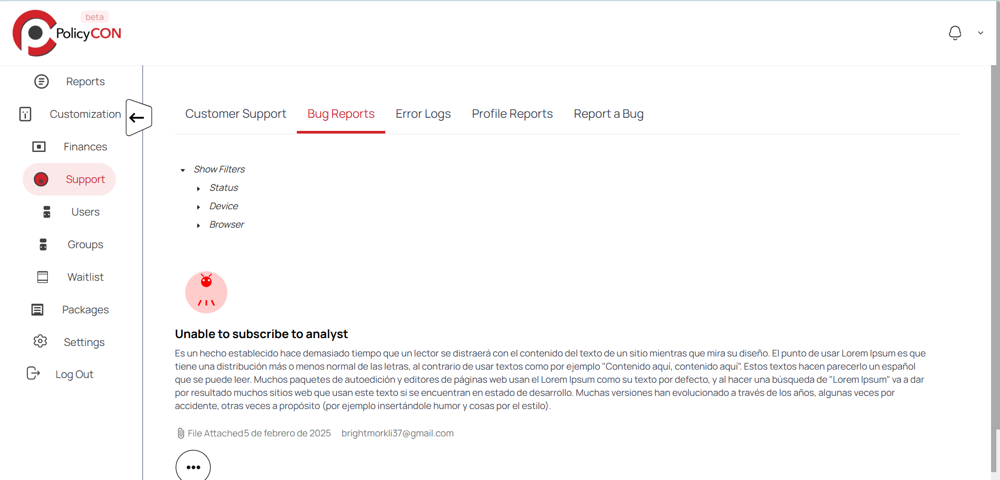
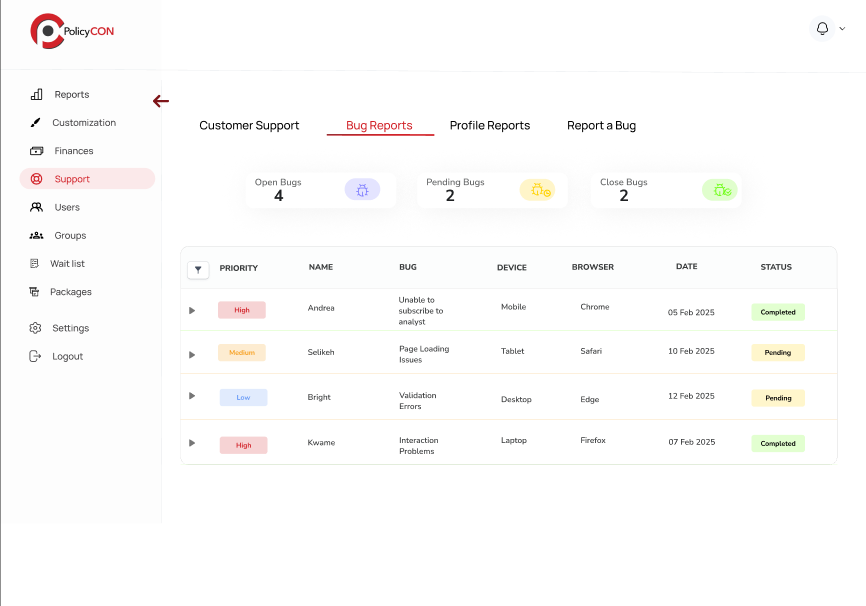
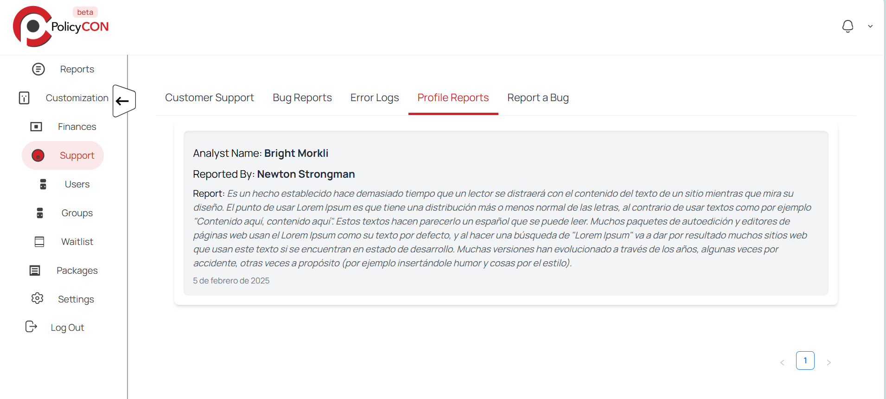
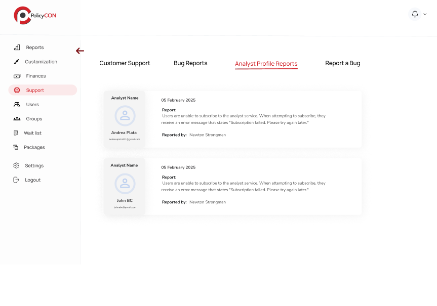
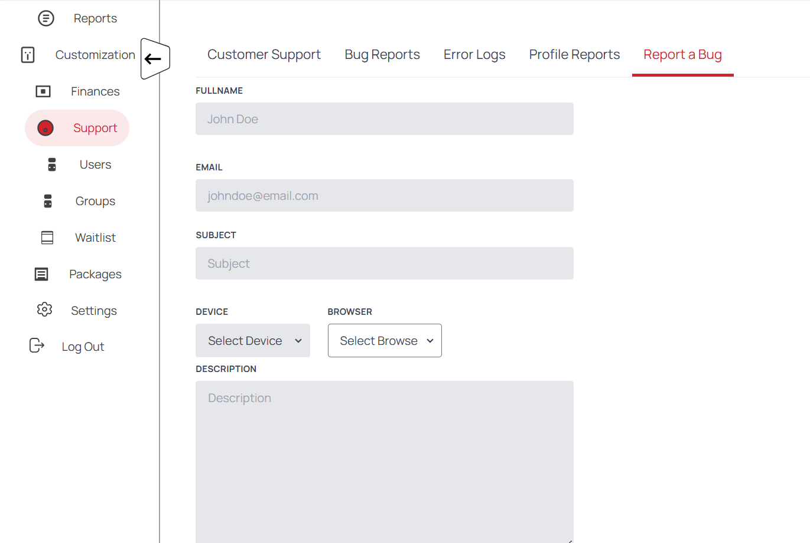
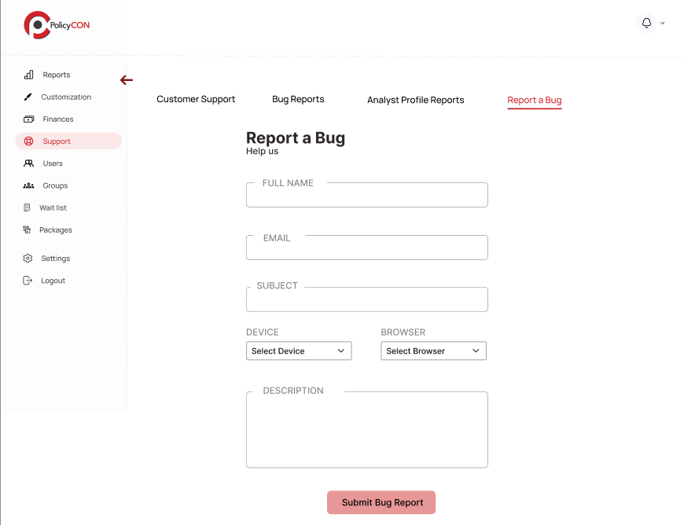

Improving navigation and structure for a seamless ticketing experience.
I led a solo redesign from UX audit to high-fidelity mockups, focusing on clarity, hierarchy, and accessibility. I improved the support and report sections by introducing structured layouts and intuitive flows to help users find assistance faster.
Create a cleaner and more accessible user experience.
Accessibility-first, clear hierarchy, streamlined navigation, and minimal UI clutter.
Redesigned ticket views, filtering logic, and CTA alignment.
Established visual hierarchy and logical grouping to make ticket content scannable and actionable.
Created quick prototypes to validate new filtering logic, entry points, and microcopy with real users.
Clean UI with generous spacing, color-coded states, and accessible button placement.
Before
After
Before
After
Before
After
Before
After
“A better interface is one that gets out of the way and lets users focus.”